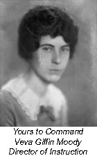

1926—The New-Way Course in Fashionable Clothes-Making
Introduction
A Little Chat Before We Begin
You are about to begin the study of clothes-making—one of the most fascinating, and at the same time, money-saving and money-making studies in the world. This study and training is planned to thoroughly equip a woman to make lovely clothes for herself and children at a great saving, or to make clothes for others, if she desires to earn money.
In preparing this training, it has been our aim to make it simple and easily understood and I know from the scores of wonderful letters that I have received from our students that we have accomplished this very thing.
To the Women Who Have Sewed
A great many women who take our training have already done considerable sewing. To those women, the first few lessons may seem very easy and unnecessary. However that may be, I suggest that it will be well worth your while to study them. You can get over them very quickly and probably find a number of things that will make even these first lessons beneficial and you will soon be into the interesting task of making beautiful clothes and other things.
It is not my desire to make you a mere dressmaker, but to make you an all-around expert in clothes-making—not only in construction, but in beauty and in harmony of line and color. To so develop your sense of beauty—your knowledge of art and harmony—that you will not be a slave to stupid mode but a creator of style that will bring out the personality of the wearer.
First of All is a Study of Types
Before you begin the study of dress construction, you must learn the various types of figures and which styles and colors best become them, so in the next few pages I am going to tell you how to achieve perfect harmony in line and color for any person.
Just one word more. We suggest that you keep this book handy on your sewing table where you can refer to it again and again throughout the course, for it will constantly remind you of all the important little secrets of color and harmony that mean so much in the artistic creation of Fashion.
Importance of Harmony in Dress
Have you ever studied the petals of a pansy? If you have, you will know what we mean when we speak of the "harmony of nature." In this delicate flower are combined green, purple and yellow in the softest natural shades. There are no clashes of color, no ugly daubs. Each one blends softly into the other, creating altogether a perfect harmony.
And it is just this harmony that we must strive to achieve in dress—for without harmony there can be no beauty. A dress may look beautiful on a model but entirely unattractive on a human figure. This is because each one of us has distinct personality, each one of us has little peculiarities of line and coloring that require special thought and consideration.
When you decide to make a dress, therefore, you must first select lines that harmonize with the lines of your body. The silhouette must be correct, exactly correct for your type of figure. Then you must choose colors that harmonize with your own colorings, and combine them in just-right proportions. Finally, you must make your selection of definite style—and it must be a style that harmonizes with your personality.
Selection of Colors
Colors play a large part in the creating of fashion. An otherwise charming gown may be completely marred by the use of a wrong color. On the other hand, the simplest gown can be enhanced by the use of the right color. If you want to be truly well-dressed, find out now from the following chart just what colors most become you—and avoid those that do not.
Color in dress should be considered from two points of view. The first is the harmonious combination of colors in the costume itself. Second is the becomingness of the colors of the costume to personal coloring, hair and eyes of the wearer. One is as important as the other and through ignorance of the first, a most unpleasant effect may be thrust upon a sensitive public; while disregard of the latter means a loss in personal beauty.
While a highly developed sense of color is a gift; yet, with a little care and thought, the results may be very surprising.
Go to Color Chart
Which Type of Figure Have You?
Did you ever stop to consider what your "good points" are and what your "bad points" are? Very few of us are "perfect thirty-sixes" you know! Some of us are short and some of us are tall. Some are thin and some are stout. Some have large hips and some have broad shoulders. We all have our own little peculiarities of figure that must be carefully considered both in the selection of a style and the making of the dress or blouse.
Clothes somehow have the power of magnifying our defects. If the too-stout woman, for instance, wears the wrong kind of dress she looks even stouter than she really is. The same holds true with the short person, and the thin person. But all of us, whether we are tall or short, stout or slender, have some certain point of beauty—and it is our duty to see that the clothes we wear emphasize this "good point."
If You Are Thin. Glance at the illustrations opposite (Illustrations C and D). Both dresses are on slim figures. Can you point out which dress is correct and explain why? Notice that in one dress all the lines run horizontally. And remember this rule: when lines run vertically down the figure they make it appear longer and slimmer; when lines run horizontally across the figure they make it appear shorter and stouter.
Now you can understand why the slim woman should not wear straight panels, or severely slender one-piece frocks. She should wear tunics, ruffles, overblouses and soft draperies. All striped materials should be eliminated in favor of those that are checked or flowered. And if she is still in her 'teens she should indulge in the fluffiest and most frilly of feminine fashions. The older woman may dress more conservatively but she should select taffeta and crepe de chine instead of such materials as tricollette and satin.
There have always been two distinct types of evening gowns for women—the slender, trained gown and the short bouffant frock. The slender woman should always choose the latter style. However, we shall take this subject up in detail later when you are ready to make your evening gown.
If You Are Stout. Once again glance at the illustration of the two types of dresses. Now you can readily point out the dress that the stout woman should wear. Just as the dress with the lines running vertically down the figure makes the slender woman appear more slender, so will it make the stout woman appear less stout.
Dresses that hang straight from the shoulders, of the one-piece variety are always becoming to the too-stout person. They may be of a tricotine, serge or crepe, but they should be very simply styled without elaborate trimmings of any kind. Simplicity should be the style keynote for all stout people.
The woman who is stout should remember that solid colors always draw less attention to stoutness than checked, flowered and horizontally striped materials. She should wear over-blouses with her suit skirts instead of tucked-in waists, and they should be the same color as the suit itself. Her dresses should be made without waistlines, and the belts should always be narrow and tacked slightly lower than where the waist-line really should be.
For the woman who has large hips we recommend fullness of the material and a skirt that is worn an inch or two longer than the prevailing mode. The woman with broad shoulders should also wear clothes with plenty of fulness, for it is a mistaken idea that snug-fitting clothes hide stoutness. As a matter of fact, a tight dress instead of making a stout woman appear smaller, actually accentuates the size of the shoulders or hips.
If You Are Tall. The tall woman must be careful that the clothes she wears do not make her appear angular and awkward. She should avoid stripes that run vertically as they add to her height. She should never wear extremely low-cut gowns nor a deep V-yoke. Instead of straight panels that emphasize her height, she should wear tunics, draperies and coat effects. The tall woman, if she is not too tall, may indulge in ruffles and frills to her heart's content. But the too-tall woman has a distinct advantage—she may wear the strictly tailored suit which so few people look well in.
If You Are Short. To be short and thin is to be what the world loves to call petite. If you belong to this type, you are indeed fortunate. You may wear almost any style that fashion dictates, providing you do not choose extremely large-figured materials. And if you remember to select styles that have long lines, you will be actually adding to your height without anyone suspecting it!
But the short-stout person has a more difficult clothes problem to face. She must avoid certain styles and materials that accentuate both her shortness and her stoutness. Short-waisted styles, for instance, give her a bulky, ungraceful appearance, and large-figured materials make her appear stouter than she really is. Her waistline should be as low as possible and all her belts should be very narrow. Frills and ruffles should be used sparingly and if tunics are worn at all they should be very long. The woman who is both short and stout will find that if she wears her skirts an inch or two longer than the prevailing mode she will greatly improve her appearance.
Your Clothes Express Your Personality
Now that you know all about color and harmony, and you have found out just which styles most become your type of figure, let us talk a little about personality. Clothes do express personality, you know. People can read in the clothes you wear the story of your ideals. They can tell whether we are frivolous, modest, bold, vain or proud. It is difficult to express personality in dresses and blouses that are bought at the shops; but now that you are going to make pretty things for yourself and maybe others to wear you will be able to weave into them an expression of the true personality of the wearer.
If one is quiet, sombre and inclined to be just the least bit melancholy one should not wear gay little frocks that are elaborately trimmed with ruffles and tucks. Wear simple clothes of excellent material, developed in soft flowing lines that borrow their simple dignity from the ancient Greek costumes. Leave the brightly-colored, much-beruffled frocks and blouses to the fun-loving young miss whose personality so exactly fits this type of clothes.
With harmony, style, color and personality, clothes require only the final touch of correct workmanship to make them perfect. And that is what the following chapters are dedicated to—the teaching of correct workmanship applied to the proper design of the individual. You will learn how to make seams that are finished as seams should be, hems and plackets and facings that are just-right in every detail, rufflings and shirrings and trimmings that would do justice to the most charming style. You will learn how to adjust a pattern so that it fits your figure perfectly, how to cut a dress with the least waste of material, how to impart to the finished garment just the correct touch of individuality. You will learn expert clothes-making in all its phases—from the neatest of tailored button-holes to the most elaborate of braided designs.
Now we are ready to begin. The first lesson is very simple and you should have no trouble in finishing it at one sitting. Probably you already know most of the things I will tell you in this lesson, but read it over anyway and let it serve as a starter and in a surprisingly short time I will have you make beautiful things that will be a real joy to who ever possesses them. Remember, that the one important thing in this training is to study regularly, every day do some if you possibly can and you will be surprised how quickly you will be an expert clothes-maker.